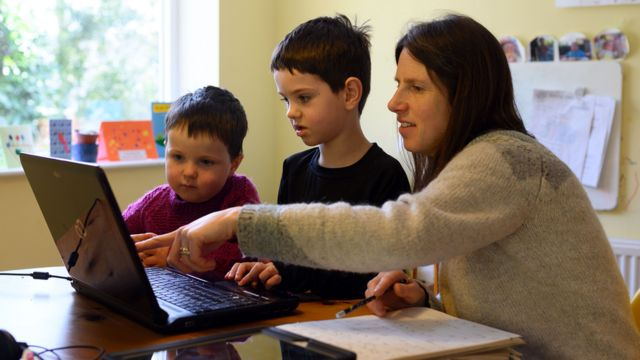

Cómo apoyar el aprendizaje del estudiante en el hogar
Los padres son los primeros maestros de los niños y el hogar es el primer salón de clases.
Como recurso clave del aprendizaje y el desarrollo, los padres ayudan a dar forma al desarrollo social,
emocional y físico de los niños para que ellos puedan tener éxito dentro y fuera de la escuela.
Se requiere que las familias, escuelas y comunidad trabajen juntos y en mutuo acuerdo para apoyar el éxito
del estudiante, y esto significa que se comprometan a hacer algo para que esto sea posible
10 consejos para los padres:
Como padre, usted puede reforzar en su casa esta importante colaboración de entre la familia e escuela. Para
ayudar a sus hijos a estar mejor preparados, orientarlos y para ampliar sus oportunidades de aprendizaje
escolar usted puede hacer lo siguiente:
-
Establecer una rutina diaria en familia, que incluya buenos hábitos de
alimentación y de dormir
-
Destinar un lugar en casa y horario para hacer la tarea escolar
-
Revisar las tareas, deberes y proyectos
-
Hablar todos los días con su hijo/a sobre sus actividades
-
Promover la alfabetización, lea libros y también léale a su hijo/a
-
Limitar y supervisar el tiempo de que ven televisión, juegan, o pasan en las redes sociales y la
computadora
-
Expresarle a su hijo que tiene altas expectativas y estándares en su aprendizaje
-
Asistir a las conferencias de padres y maestros, a los días de recepción y eventos de regreso escolares
-
Participar en las decisiones que afectan la educación de su hijo
-
Aprovechar de los recursos que hay en la comunidad y visitar las bibliotecas, museos, zoológicos y
teatros, y fomentar la participación en los clubes de después de la jornada escolar, deportes y
actividades artísticas
